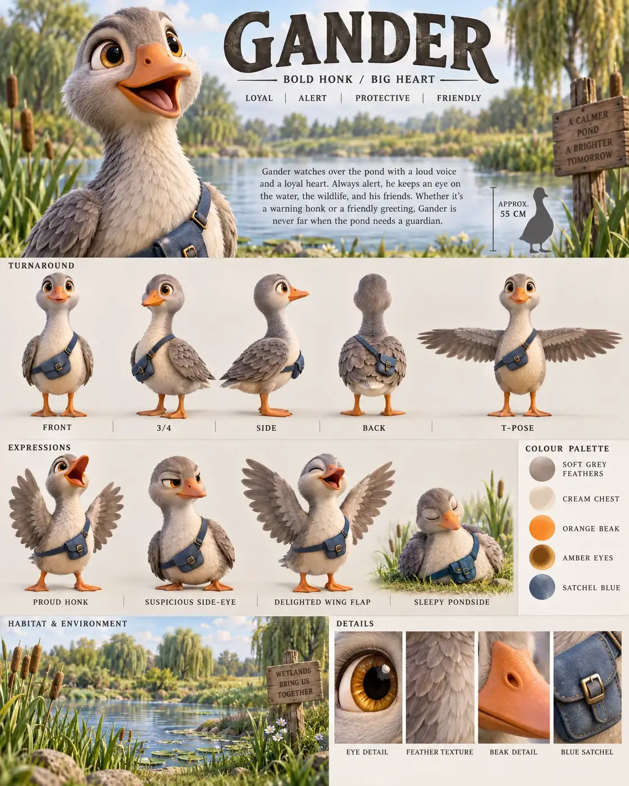

#81 of 100
Gander
Greylag goose
Birds & SkyBOLD HONKBIG HEART
- Species
- Greylag goose
- Collection
- Birds & Sky
- Height
- 55 CM
- Personality
- LOYALALERTPROTECTIVEFRIENDLY
- Colour palette
- SOFT GREY FEATHERSCREAM CHESTORANGE BEAKAMBER EYESSATCHEL BLUE
- Expressions
- proud open-beak honk
- suspicious side-eye
- delighted wing flap
- sleepy pondside expression
- Detail panels
- EYE DETAIL
- FEATHER TEXTURE
- BEAK DETAIL
- BLUE SATCHEL
- Character note
- Gander watching over the pond with a loud voice and a loyal heart
Reference sheet prompt
Cute greylag goose named GANDER, with oversized amber eyes, soft grey feathers, a cream chest, an orange beak, sturdy webbed feet, and a tiny blue messenger satchel. A determined pond guardian high-end 3D animated feature reference sheet, portrait 4:5 board, original character, header “GANDER” with tagline “BOLD HONK / BIG HEART,” traits “LOYAL / ALERT / PROTECTIVE / FRIENDLY” full-body turnaround — front / 3-4 / side / back / T-pose, beak, feather pattern, feet, satchel, wings, and proportions consistent, labels beneath each pose row of 4 expressions: proud open-beak honk, suspicious side-eye, delighted wing flap, sleepy pondside expression palette swatches SOFT GREY FEATHERS, CREAM CHEST, ORANGE BEAK, AMBER EYES, SATCHEL BLUE wetland meadow habitat accents with reeds, pond water, grass, and distant willow trees in the information band, approximate height “APPROX. 55 CM,” bio about Gander watching over the pond with a loud voice and a loyal heart bottom macro panels labeled EYE DETAIL, FEATHER TEXTURE, BEAK DETAIL, BLUE SATCHEL 8k render, soft layered feathers, no extra geese, no logos